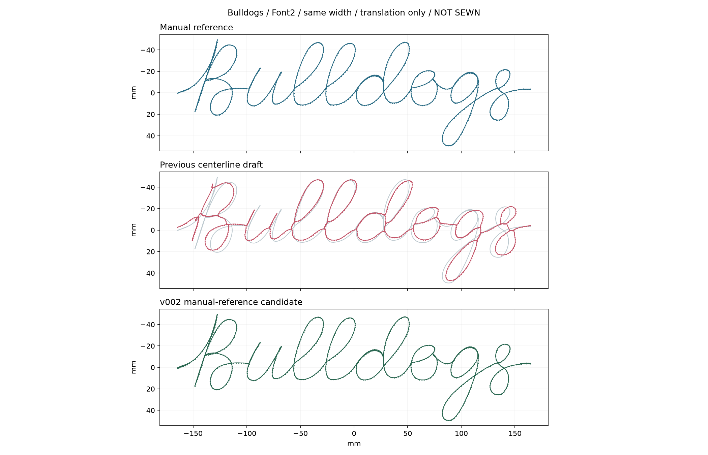
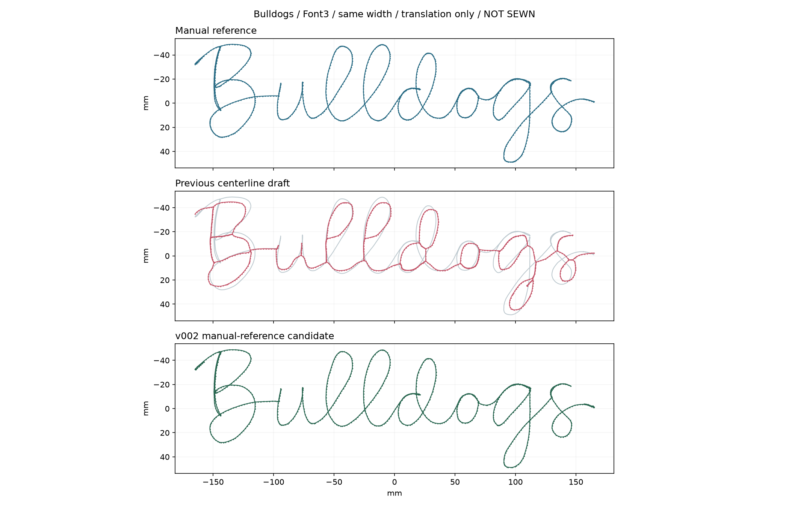
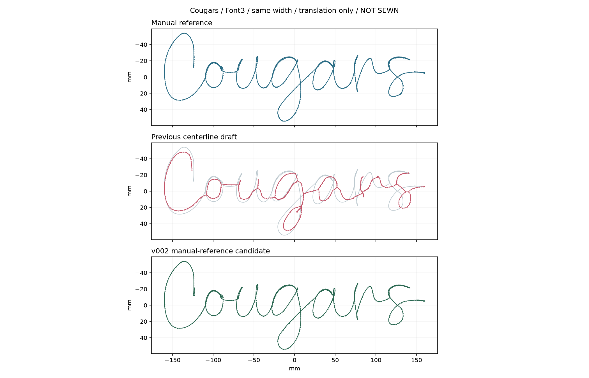

2026-10-13 · 3 款同词人工参考重建
CHENILLE-REF-v002
刺绣候选方案
文件验证通过，待 Wilcom 检查和实机试绣。
本版依据数字针路对照生成。请先核对起收短针、回走、尺寸与设备工作模式，再由操作方安排试绣。
本轮重建参考曲线、保留内部尖转，并补齐 10 mm 起收回线。对照距离仅表示与输入人工稿的贴合程度，不代表实际落针精度。
完整方案与操作步骤 · 文件校验清单 · 批次报告
01-F2-Bulldogs
Bulldogs / Font2
328.9 × 98.7 mm · 829 针 · 0 跳针
逐针回放与对照 下载候选 DST
试绣反馈表 · 文件校验报告 · 单款说明
36-F3-Bulldogs
Bulldogs / Font3
329.7 × 97.6 mm · 810 针 · 0 跳针
逐针回放与对照 下载候选 DST
试绣反馈表 · 文件校验报告 · 单款说明
43-F3-Cougars
Cougars / Font3
319.9 × 108.3 mm · 687 针 · 0 跳针
逐针回放与对照 下载候选 DST
试绣反馈表 · 文件校验报告 · 单款说明